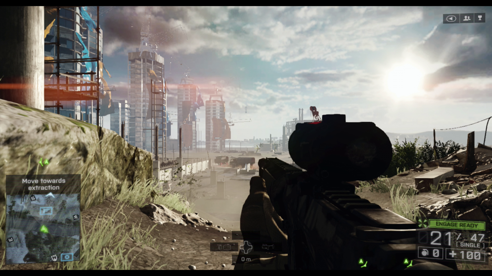

Battlefield is a series of first-person shooter video games that started out on Microsoft Windows and OS X with Battlefield 1942, which was released in 2002. The series is developed by Swedish company EA DICE and is published by American company Electronic Arts. The series features a particular focus on large maps, teamwork and vehicle warfare. The PC games in the series are mainly focused on online multiplayer. The Battlefield series has been played by more than 50 million players worldwide as of 2012, across 11 games and 12 expansion packs released since its inception in 2002.
